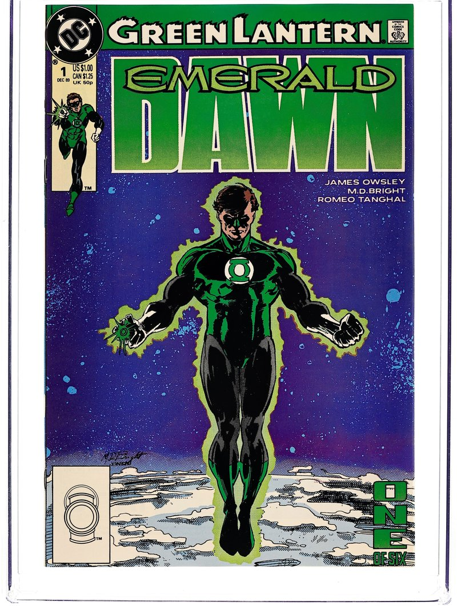

In-Universe History · 1989
Emerald Dawn
Hal Jordan's origin, retold for a new era.

1989–1990
The story
By 1989, Hal Jordan had been Green Lantern for thirty years of publication history — and DC's post-Crisis on Infinite Earths continuity needed his beginning told fresh. Green Lantern: Emerald Dawn #1–6 (December 1989 – May 1990) did exactly that: a six-issue retelling of how a reckless test pilot inherited the universe's most powerful weapon.
The series opens not with heroism but with failure. This Hal is a screw-up: haunted by watching his father Martin Jordan die in a plane crash as a boy, he drinks, he crashes a car, he injures his friends — and it's at rock bottom that a dying Abin Sur finds him. The ring's choice of so flawed a bearer was the point: willpower isn't the absence of fear or failure, but the refusal to stay down.
Written by Jim Owsley (issue #1, later known as Christopher Priest) with Keith Giffen plotting and Gerard Jones scripting #2–6, and drawn by M.D. Bright and Romeo Tanghal, Emerald Dawn follows Hal's first week with the ring — his faltering first constructs, his first trip to Oa, his first battle with the Legion. Its 1991 sequel, Emerald Dawn II, went further: it revealed that Hal's trainer during a 90-day jail sentence was none other than Sinestro himself, planting the mentor-student bond that made their later enmity tragic.
Much of Emerald Dawn was later refined by Geoff Johns' Secret Origin (2008), but the miniseries remains the bridge between the 1959 Showcase #22 debut and the modern Hal Jordan — the flawed, fearless pilot the ring chose twice.
Green Lantern: Emerald Dawn (1989) #1 — main cover photograph. Mark D. Bright (cover pencils); Klaus Janson (cover inks). Artwork source & details.
Artwork credits (1 image)
Credits refer to the illustrations shown here. Open a record for sources, adaptations and unresolved details. Some artwork and source pages contain story spoilers.
- Emerald Dawn — Green Lantern: Emerald Dawn (1989) #1 — main cover photograph. Mark D. Bright (cover pencils); Klaus Janson (cover inks).